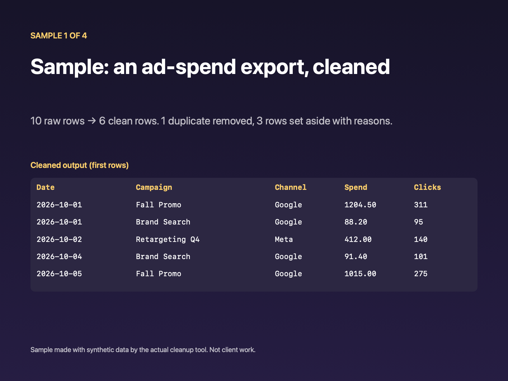
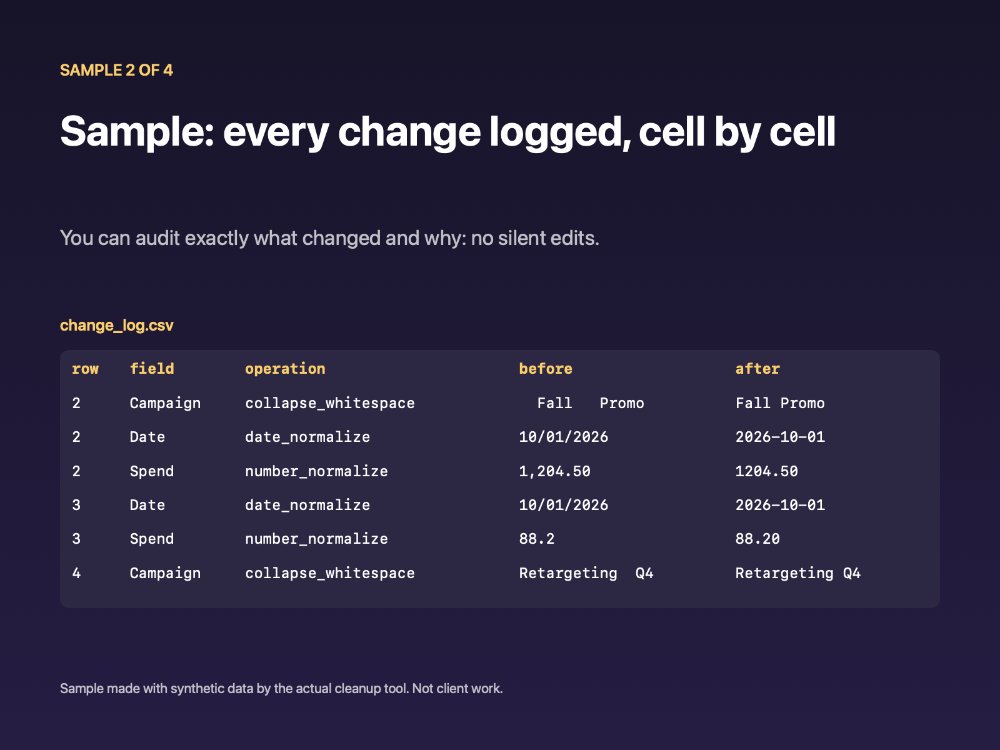
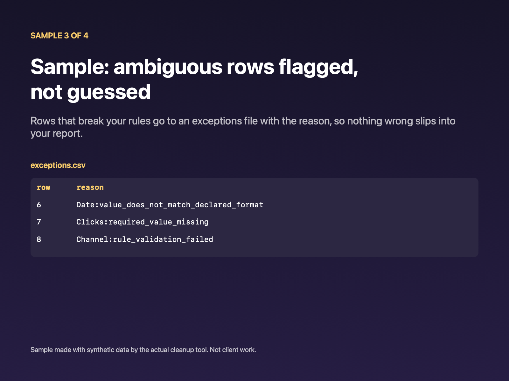
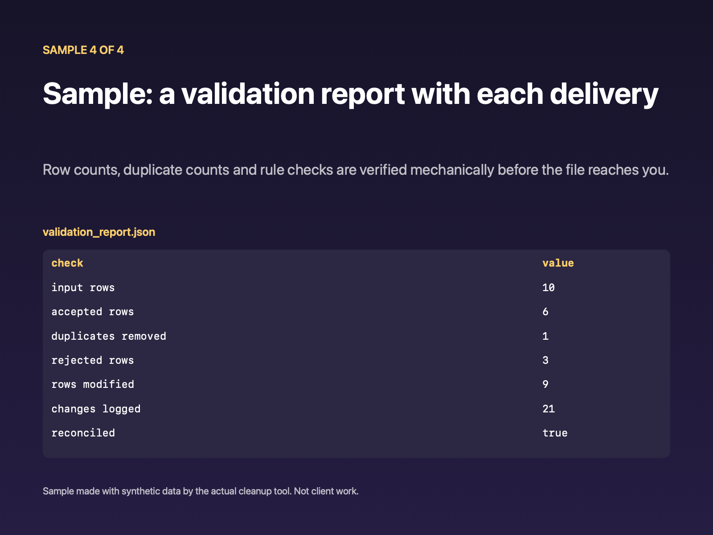

Messy exports in. Clean, checked data out.
Send one messy CSV or XLSX export and the rules it should follow. You get back a clean file, a log of every change, a list of rows that broke your rules (with the reason), and a validation report.
Order on Contra: $199 fixedWhat you get
- The cleaned file: duplicates removed; dates, numbers and text normalized to the rules we agree.
- A change log: every cell that changed, before and after.
- An exceptions file: every row that could not be fixed, with the reason. Nothing is dropped silently or guessed.
- A validation report: rows in = clean rows + exceptions + duplicates removed.
Scope and price
- $199 fixed for one CSV or XLSX file (no macros), up to 5,000 rows and up to five cleanup rules. Anything larger is quoted separately before any work.
- Two business days after the file, the agreed rules and the funded order are in place.
- Ordering and payment through Contra, so payment is held by the platform until delivery.
- Not included: recurring work, more than one file, analysis or dashboards, access to your systems. No passwords or logins are ever needed.
- Tell me first if the file holds personal, financial, health or login data. This service isn't for regulated or high-risk personal data.
Contact lists and CRM exports
Same service, same price, for contact lists. You get one row per real person, and every merge comes with its reason.
- Merged only on evidence: the same email; the same Gmail inbox written differently (dots,
+tags); or the same phone and the same name. A name alone is never enough. - Shared inboxes are flagged, not merged: if two people share one address (for example
info@), those rows go to a review list. - A merge log and a field-conflict report: which rows were combined, on what evidence, and which value was kept where duplicates disagreed.
- One format: phones in +1 format, dates as YYYY-MM-DD, state codes, plain amounts. Spreadsheet-formula cells are made safe.
- Every input row accounted for: kept, merged or flagged, never silently dropped.
See the de-duplication run live in your browser (synthetic sample; nothing is uploaded).
Synthetic demo (made-up data, not client work): a 270-row contact export reduced to 172 contacts. 88 rows were merged (59 on the same email, 21 on the same phone and name, 8 on the same Gmail inbox) and 10 rows were set aside with reasons. Every row reconciles.
Sample work
These samples use synthetic data, not client work. They show the real output of the cleanup tool on a made-up 10-row ad-spend export.



